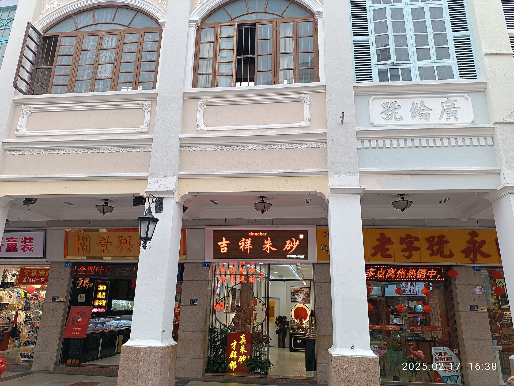

石岐街道石岐街道第 1 天 · 已安排
孙文西路文化旅游步行街
建议停留 120 分钟
石岐老城核心的南洋风格骑楼老街，古称迎恩街，1925年为纪念孙中山先生改称孙文路，2025年9月28日完成整体修缮与活化后焕新开放。沿街保留思豪大酒店、永安公司、汇丰公司、先施公司等商号旧址，与兴中广场、岐江“一河两岸”串珠成链，白天可看山花灰塑与骑楼细节，夜晚有骑楼光影与滨江人气。适合城市漫游、拍照与夜生活，也是本次 Day 1 傍晚从博物馆步行进入老城的主轴。
开放全天开放（街区）；两侧店铺营业时间各不相同 · 无（街区全天开放）
Google Maps ↗官网 ↗